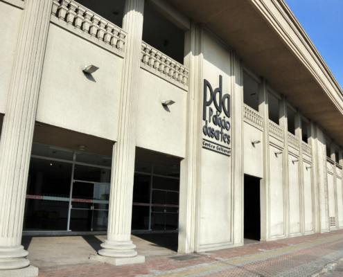
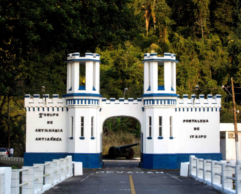
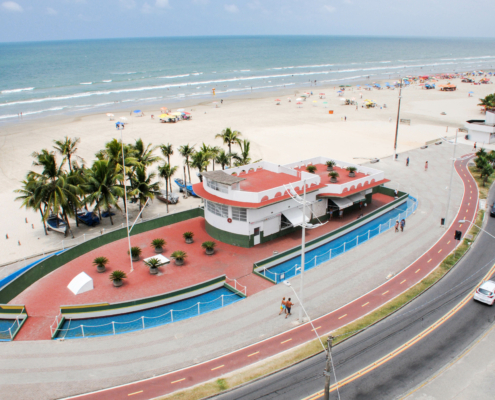
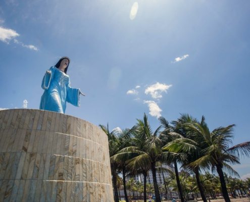

O Portinho (ou Área de Lazer Ézio Dall'Acqua) é um grande parque
ecológico de lazer gratuito localizado na entrada de Praia Grande,
às margens do Mar Pequeno. É o espaço ideal para curtir a natureza,
fazer churrasco, pescar ou passear com a família.
Palácio das Artes
Avenida Presidente Costa e Silva

O Complexo Cultural Palácio das Artes oferece a moradores e turistas,
lazer, diversão e cultura. As atividades são, em sua maioria, gratuitas,
voltadas a todo tipo de público: de crianças a adultos.
Parque da Cidade
R. José Bonifácio
O parque possui grande área recreativa que engloba pista de cooper, quiosques,
equipamentos de ginástica para os visitantes da melhor idade e espaço
para piqueniques. Além disso, conta com mais duas atrações imperdíveis:
Orquidário Municipal e Dog Park.
Fortaleza de Itaipu
Av. Mal. Mallet

Mesmo mantendo intensa atividade militar, impulsionada pelo recebimento
de armamentos de última geração, a Fortaleza convive em perfeita
integração com a natureza e a comunidade local, abrindo suas dependências
para eventos, passeios e atividades educativas e culturais.
Boutique de Peixes Ocian
Av. Pres. Castelo Branco

A boutique é uma réplica de um pesqueiro, e rodeado por espelhos de água,
passa a impressão de um barco ancorado. O projeto buscou resgatar a
história da pesca artesanal, em especial no bairro Ocian, somando modernidade
e oferta de um ambiente propício para manuseio e venda dos produtos.
Estátua de Iemanjá
Av. Pres. Castelo Branco

A Estátua de Iemanjá é um marco histórico de Praia Grande. Localizada
na Praia Mirim, tem aproximadamente 9 metros de altura. No final de
novembro e começo de dezembro, milhares de fiéis se dirigem à
Praia Grande, para os tradicionais “Festejos de Iemanjá”.